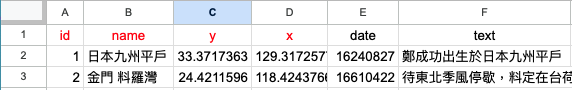

DocuGIS2簡介
本工具是支援 DocuSky 的地理資訊系統 (GIS)，可以利用 TSV或Excel檔案上傳內有WGS84經緯度坐標資訊繪製成地圖。
使用步驟 1.匯入資料 2.探索地圖 3.匯出資料。 資料欄位範例如下：

資料欄位說明:id,name,x,y,date,text…紅色為必要欄位，y為WGS84十進位緯度，x為經度
範本下載:TSV/Excel/x-Markus/線上範本
movie教學影片
About
MUNDa is a spatial analysis platform for data annotated in ENTMARKUS, COMARKUS, and IMMARKUS. It imports XML files exported from X-MARKUS, allowing the data to be displayed and explored in an interactive GIS environment, complete with various topographic and historical administrative layers, that preserves their context and also allows for AI-assisted analysis of the spatial data. MUNDa also allows for the visualization of spatial data in TSV and similar formats.
MUNDa was designed and developed by Dr. Lin Nung-Yao, Dr. Tu Hsieh-Chang, Prof. Dr. Hilde De Weerdt, and Dawn Zhuang as part of the Regionalizing Infrastructures in Chinese History (RegInfra) project.
This research is part of a project that has received funding from the European Research Council (ERC) under the European Union's Horizon 2020 research and innovation programme (Grant agreement No. 101019509).
To cite the software when you use it in your research or teaching, please use the following bibliographic information:
Platform
Lin Nung-Yao, Tu Hsieh-Chang, Hilde De Weerdt, Dawn Zhuang. 2025-. MUNDa: Spatial Analysis.
Code
Lin Nung-Yao. MUNDa: Spatial Analysis
https://github.com/dHumanities/code-x-markus/tree/main/MUNDa
Instructions
Dawn Zhuang. MUNDa Instructions. 2026.
For a discussion of the design rationale of MUNDa and the broader MARKUS environment:
Hilde De Weerdt, Brent Ho, Rainer Simon, Lee Sunkyu, Sander Molenaar, Xi Wangzhi, Dawn Zhuang, Iva Stojević, Tu Hsieh-Chang, Taylor Zaneri, Lin Nung-yao, and Meret Meister. “Contextual Semantic Text and Image Annotation in the MARKUS Environment.”Digital Humanities Quarterly 19.4 (2025). https://dhq.digitalhumanities.org/vol/19/4/000808/000808.html.